Сборка
ЭТАП 2. Установка вычислительного модуля
Шаг 1. Подготовка Orange Pi
Используется:
- Orange Pi - 1шт;
- Комплект радиаторов - 2шт;
- Стойка нейлоновая HTP-311 - 1шт;
- Винт М3х5 - 1шт.
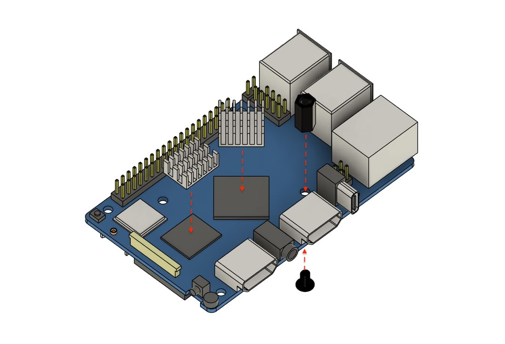
Рис. 1Установите радиаторы охлаждение и нейлоновую стойку HTP-311 на Orange Pi как показано на рисунке 1.
Шаг 2. Подготовка SKYRIS шилд
Используется:
- SKYRIS шилд - 1шт;
- Кулер - 1шт;
- Винт М3х10 - 2шт.
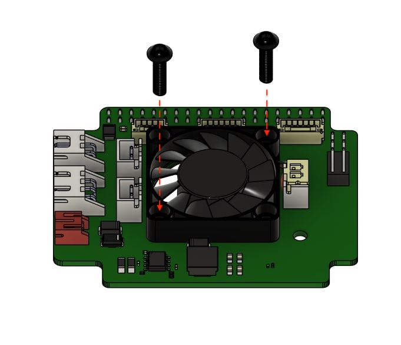
Рис. 2Установите кулер на плату «SKYRIS шилд», как показано на рисунке 2
Подсказка Обратите внимание на ориентацию кулера, надписями вниз.
Зафиксируйте кулер с помощью 2 винтов М3х10, установленных диагонально.
Шаг 3. Установка SKYRIS шилд на Orange Pi
Используется:
- Orange Pi - 1шт;
- SKYRIS шилд - 1шт;
- Винт М3х5 - 1шт.
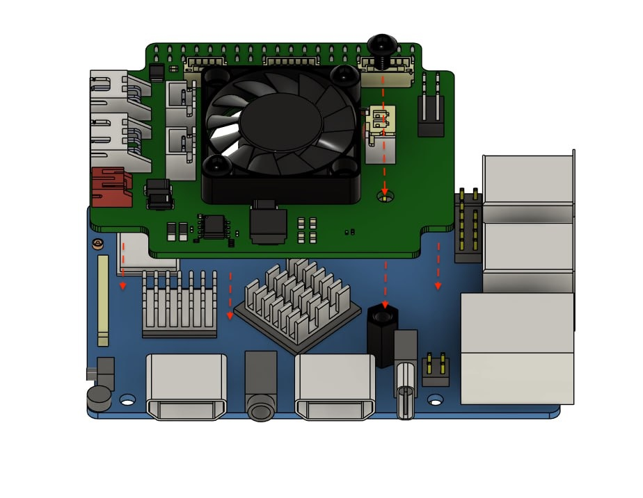
Рис. 3Установите SKYRIS шилд на одноплатный компьютер Orange Pi, как показано на рисунке 3.
Зафиксируйте с помощью Винта М3х5.
Шаг 4. Установка Маунта Orange Pi на карбоновую раму
Используется:
- Маунт OrangePi - 1шт;
- Винт М3х14 - 4шт;
- Стойка нейлоновая HTP-335 - 4шт.
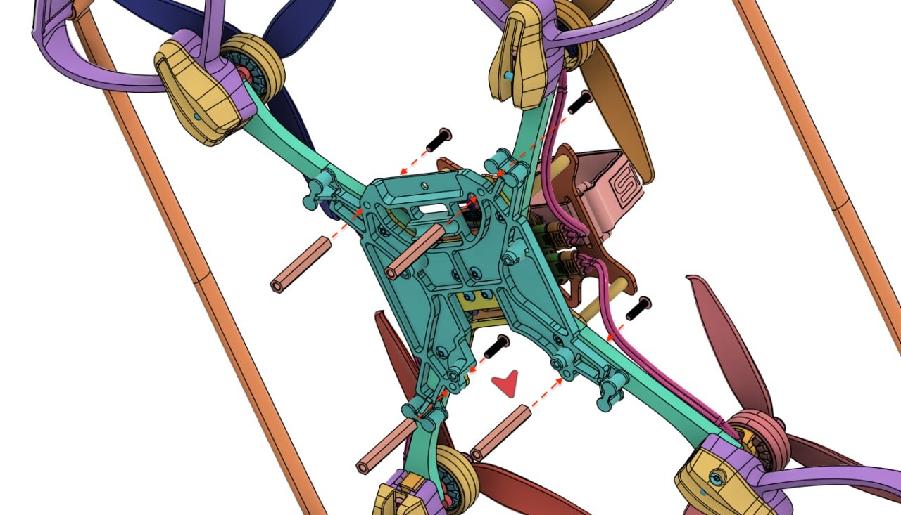
Рис. 4Соедините детали как показано на рисунке 4:
- совместите 4 отверстия на детали «Маунт Orange Pi» с ответными отверстиями на детали «Центральная пластина нижняя».
Подсказка Обратите внимание на расположение выреза в детали «Маунт Orange Pi» при совмещении с рамой, вырез должен располагаться с передней части дрона (направление указано красной стрелкой.
- установите 4 винта М3х14 в отверстия сверху-вниз и вкрутите их в 4 нейлоновые стойки HTP-335.
Шаг 5. Установка Orange Pi
Используется:
- Orange Pi - 1шт;
- Кабель UART - 1шт;
- Винт М2.5х5 - 4шт.
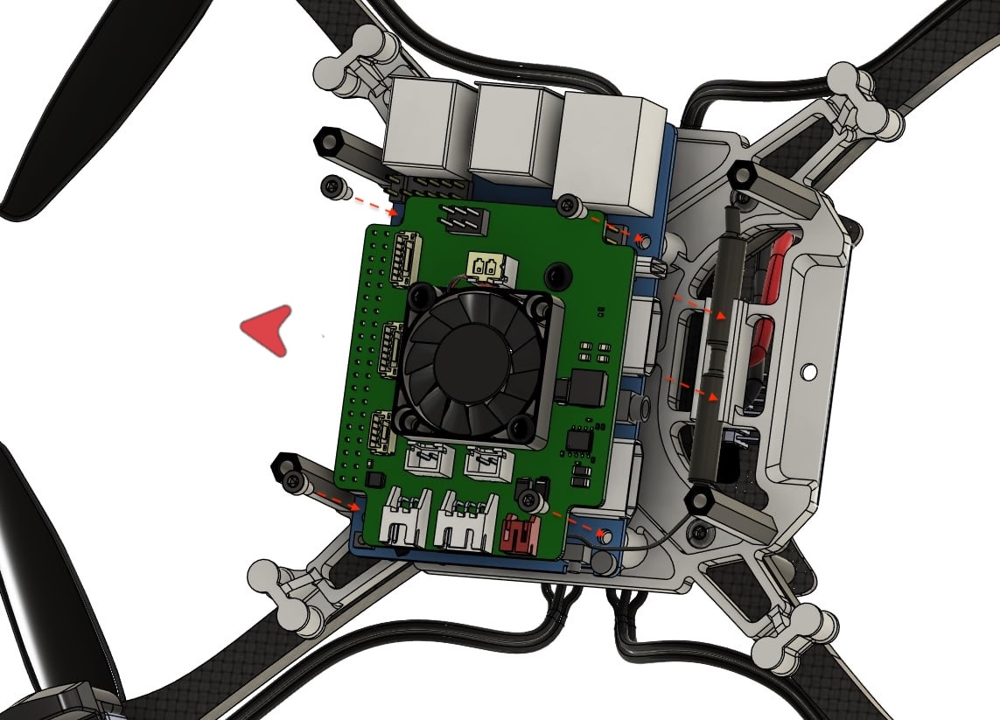
Рис. 5Установите Orange Pi на деталь «Маунт Orange Pi» с помощью 4 винтов М2.5х5:
- совместите монтажные отверстия на одноплатном компьютере Orange Pi cо стойками на детали «Маунт Orange Pi».
Подсказка Обратите внимание на ориентацию Orange Pi. Гнезда HDMI ориентированы назад относительно направления дрона (указано красной стрелкой на рисунке 5).
Зафиксируйте Orange Pi с помощью 4 Винтов М2.5х5.
Установите WiFi антенну в держатель антенны, расположенном в задней части детали «Маунт Orange Pi».
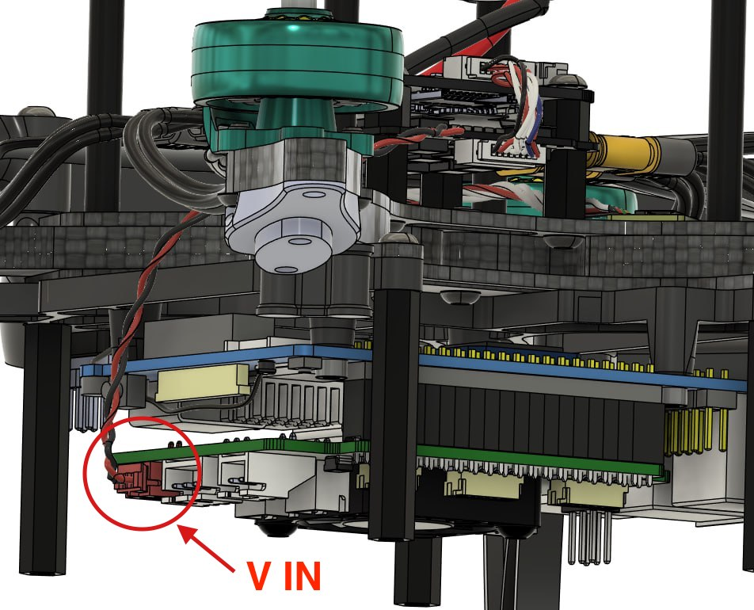
Рис. 6Подключите кабель питания (двухжильный кабель с красным коннектором PH2.0) в красное гнездо «V IN» на SKYRIS шилд, как на рисунке 6.
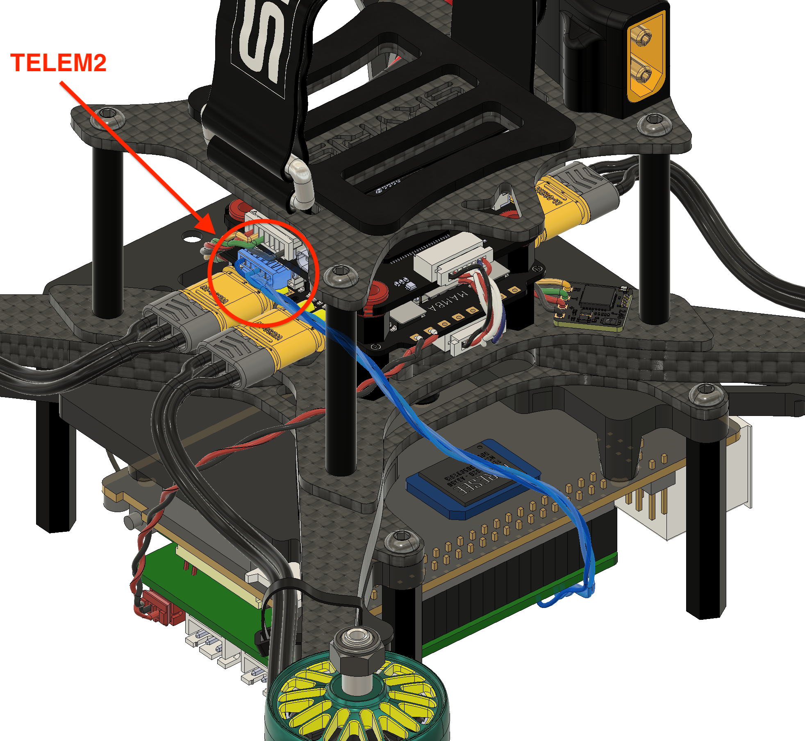
Рис. 7Подключите кабель UART в гнездо TELEM2 на полетном контроллере (иллюстрация 7)
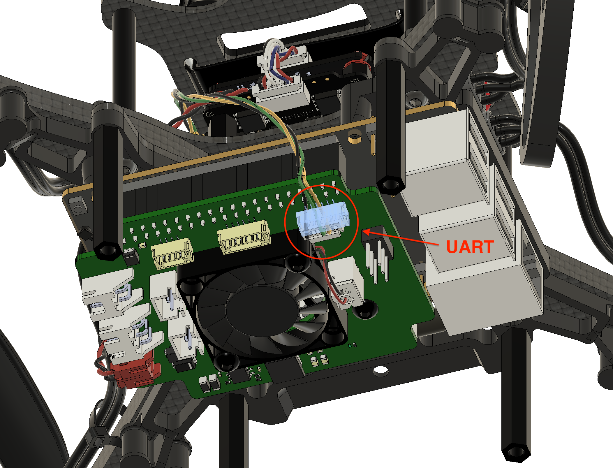
Рис. 8Подключите кабель UART во внешнее гнездо UART на плате SKYRIS шилд (иллюстрация 8).
Шаг 6. Установка LED-ленты
Используется:
- Маунт LED - 4шт;
- Адресная LED-лента - 1шт;
- Пластиковый хомут - 1шт.
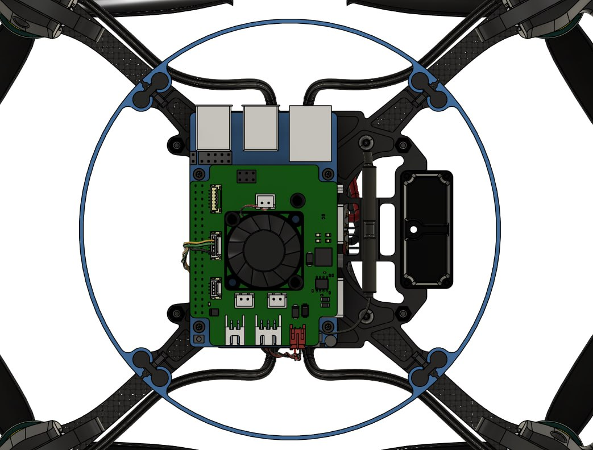
Рис. 9Установите 4 детали «Маунт LED» на деталь «Маунт Orange Pi», как показано на рисунке 9.
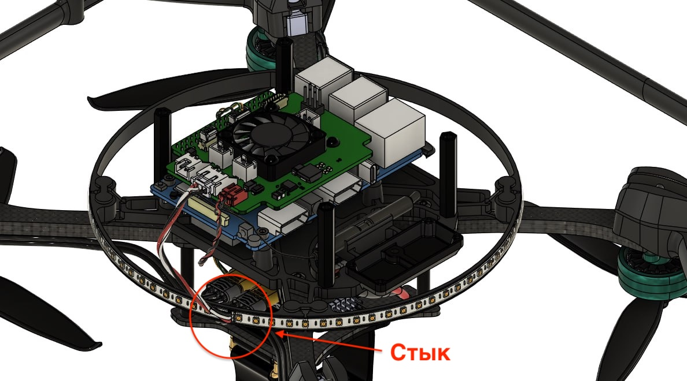
Рис. 10Установите LED-ленту на обруч, полученный в результате установки Маунтов LED.
Подсказка Обратите внимание на расположение стыка концов ленты. (иллюстрация 10).
Зафиксируйте стык ленты с помощью пластикового хомута. Подключите коннектор LED-ленты в гнездо LED, которое располагается на SKYRIS шилд.
Шаг 7. Установка камеры OPi
Используется:
- Маунт камеры - 1шт;
- Камера OPi - 1шт;
- Cтойка нейлоновая HTP-2.5 20мм - 4шт;
- Винт М2.5х5.
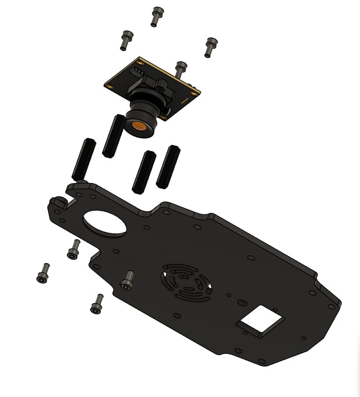
Рис. 11Установите камеру OPi, как показано на рисунке 11:
установите 4 винта М2.5х5 в отверстия на детали «Маунт камеры» снизу-вверх, вкрутив их в нейлоновые стойки HTP-2.5 20мм.
совместите монтажные отверстия на камере OPi с отверстиями на стойках и зафиксируйте камеру с помощью 4 винтов М2.5х5.
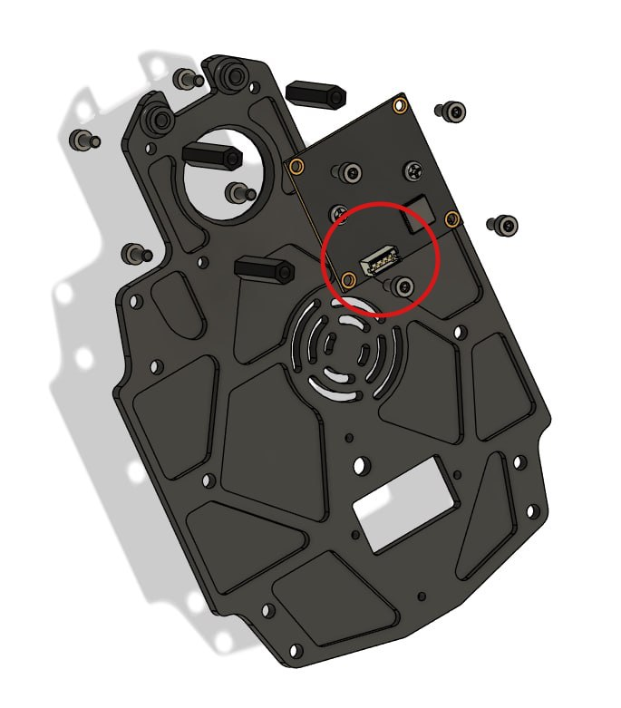
Рис. 12Подсказка Обратите внимание на ориентацию камеры OPi. Гнездо подключения кабеля расположено внутрь, как на рисунке 12.
Шаг 8. Установка лазерного дальномера
Используется:
- Маунт камеры, с установленной камерой OPi;
- Лазерный дальномер - 1шт;
- Винт М3х5 - 2шт.
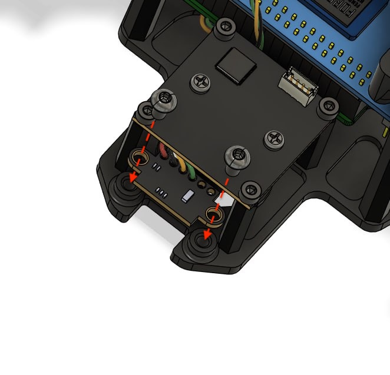
Рис. 13Установите лазерный дальномер, как показано на рисунке 13:
совместите монтажные отверстия на лазерном дальномере с монтажными отверстиями на детали «Маунт камеры» (провода ориентированы внутрь)
зафиксируйте лазерный дальномер с помощью 2 винтов М3х5.
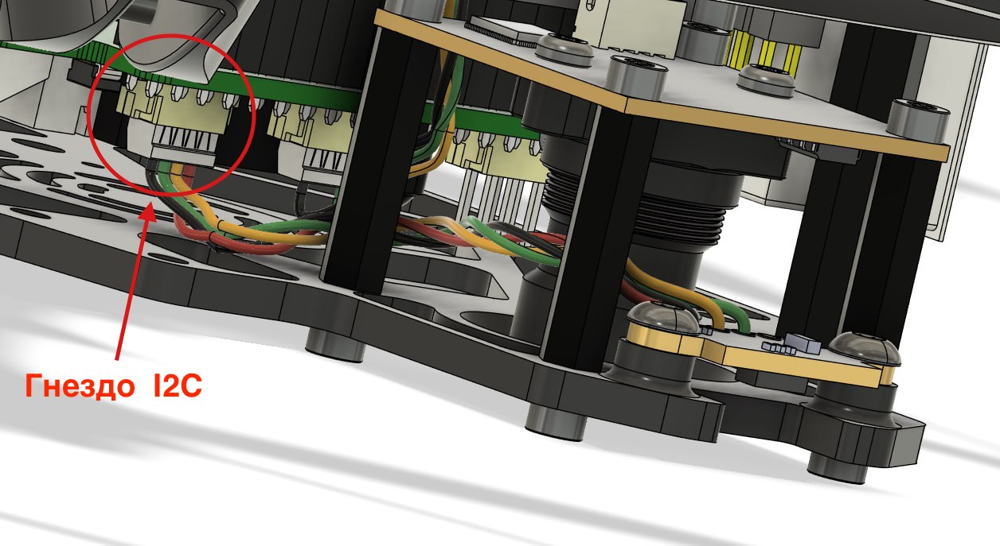
Рис. 14Проложите кабель лазерного дальномера между объективом камеры OPi и нейлоновыми стойками HTP-2.5 20мм, как показано на рисунке 14.
Подключите коннектор лазерного дальномера в гнездо I2C, расположенное на SKYRIS шилд.
Шаг 9. Установка Маунта камеры
Используется:
- Маунт камеры, с установленной Камерой OPi и Лазерным дальномером;
- Кабель камеры OPi - 1шт;
- Винт М3х14 - 4шт.
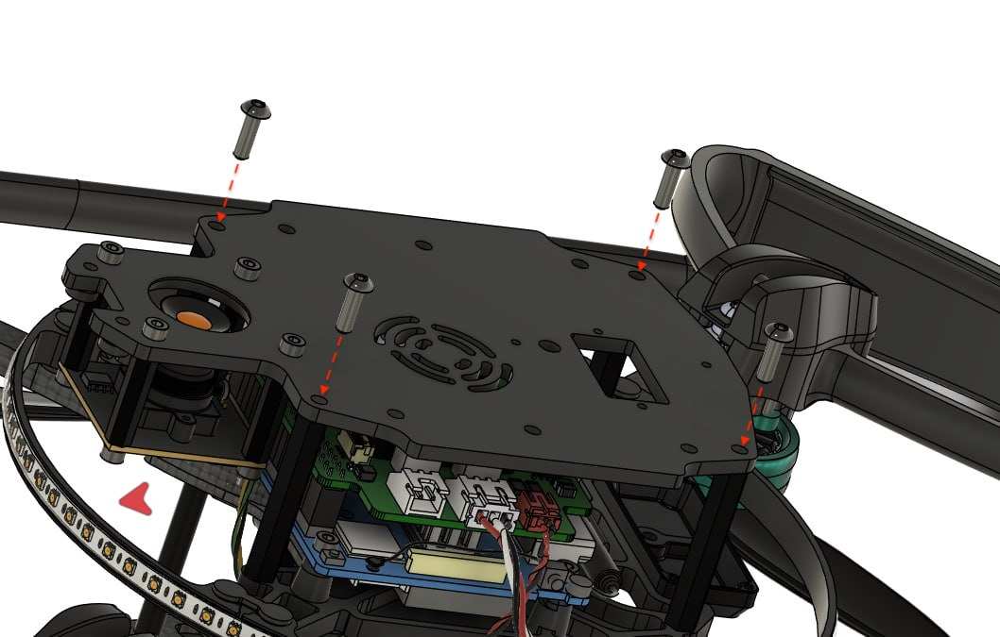
Рис. 15Установите Маунт камеры на дрон, как показано на рисунке 15:
- совместите 4 монтажных отверстия на Маунте камеры с отверстиями на нейлоновых стойках HTP-335.
Подсказка Обратите внимание на ориентацию Маунта камеры относительно носа дрона (красная стрелка). Камера OPi находится в передней части дрона.
- зафиксируйте Маунт камеры с помощью 4 винтов М3х14.
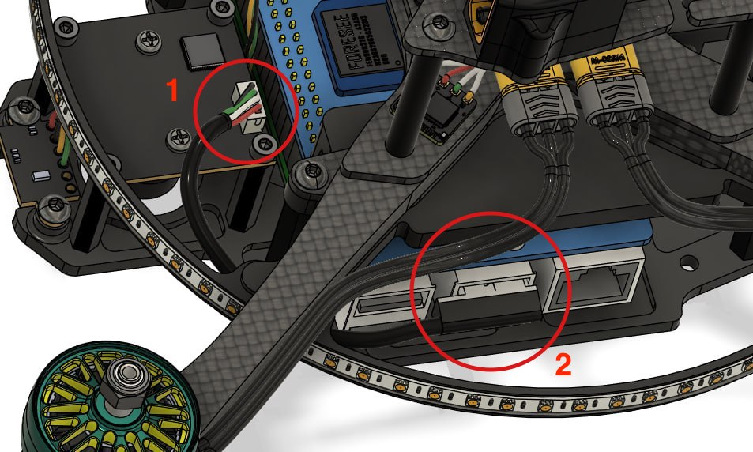
Рис. 16Подключите камеру OPi к одноплатному компьютеру Orange Pi, как на рисунке 16:
Кабель камеры OPi в гнездо камеры OPi (отмечено «1»)
Кабель камеры OPi в гнездо USB-A на одноплатном компьютере Orange Pi (отмечено «2»)